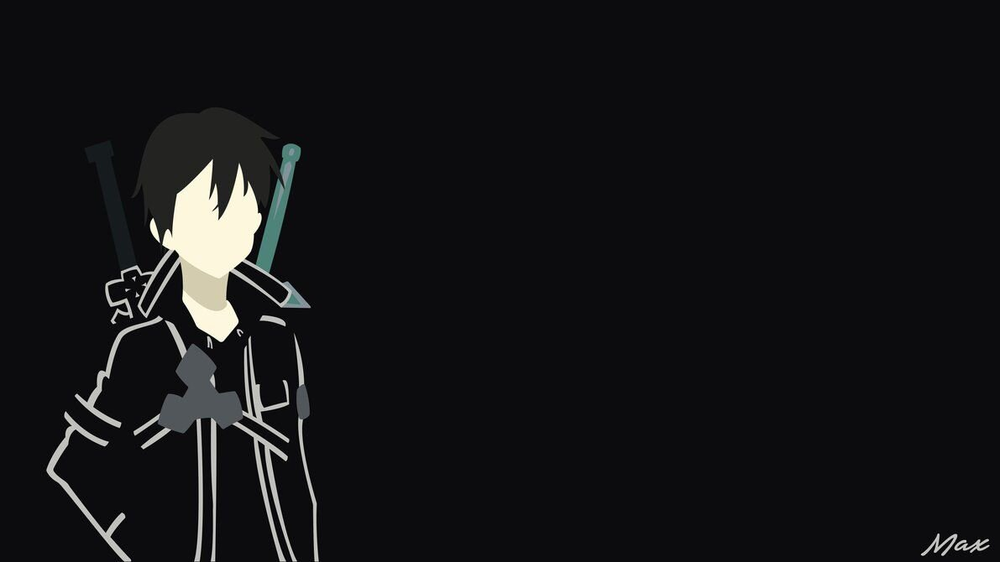

KIRITO
Sword art online
Kepribadian Kirito adalah seseorang yang tidak baik dengan kata-kata seperti yang dikatakan oleh Klein dan dapat cukup langsung. Hal ini karena dia tidak memiliki banyak persahabatan dan menutup off lain, karena cintanya kepada komputer. Dengan demikian dia bisa datang dari sebagai orang yang kasar kepada orang lain seperti Lisbeth dan Sinon. Dia kadang-kadang benar-benar tampaknya menikmati orang-orang kemarahan juga.Namun, Kirito sebenarnya orang yang baik yang hanya disalahpahami. Meskipun pendapat masyarakat umum terhadap Penguji Beta di SAO, ia menolak untuk meninggalkan pemain lain dalam kesulitan.